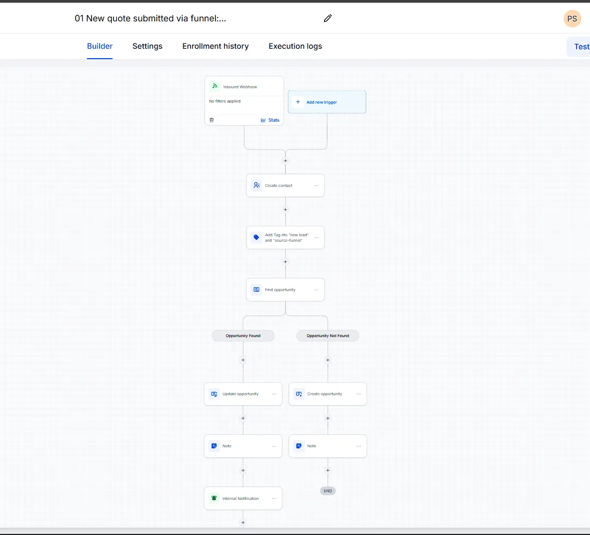
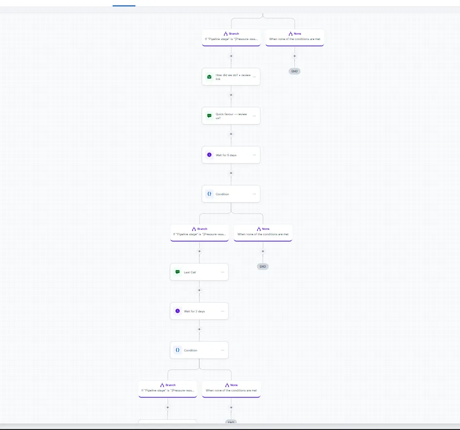
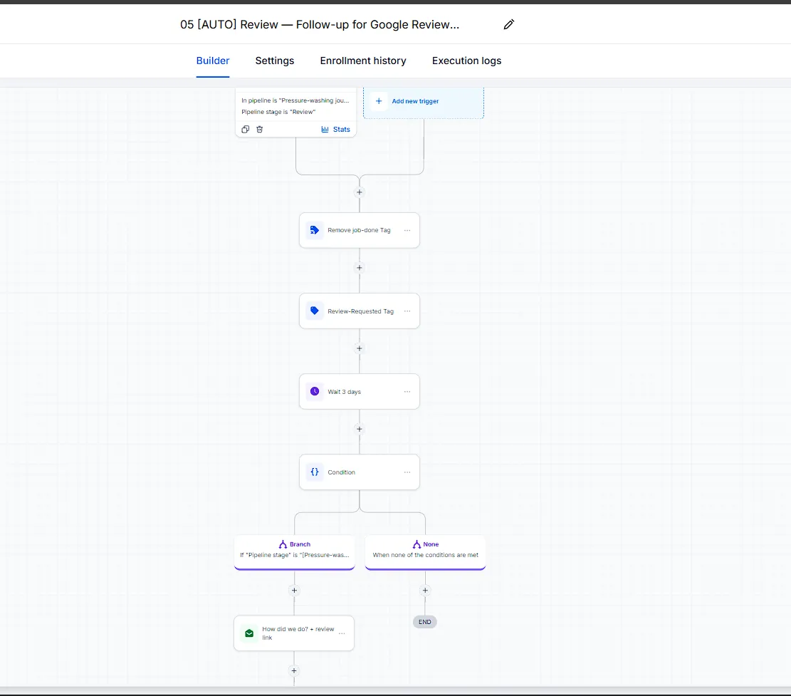

Software · Australia · 2026
GoHighLevel for Tradies (Australia) — 2026 Guide
Short answer: yes, GoHighLevel works in Australia, and for a one-truck trade business it costs about {{ghl_monthly_aud}}/month (billed in USD) to run your quotes, follow-up, bookings, and review requests on autopilot. It's a customer-relationship-and-marketing platform — CRM for short, which just means "the software that remembers every lead and job so you don't have to" — and below is what it actually does, what it costs, and the honest catch nobody puts in their ad.
I run this exact system for my family's pressure cleaning business in Albury–Wodonga, and build it for other tradies — so this is written from the driver's seat, not a software review desk.
What it actually does (in tradie terms)
Strip the marketing gloss away and there are five jobs it does that a notebook and a personal phone number can't:
- Missed-call text-back. You're on the wand, someone calls, no answer. Within seconds they get a text: "Sorry I missed you — after a quote? Tap here." One rescued $350 house-wash job covers the platform for the month.
- Instant quotes. A customer picks their services, types an area, and gets a ballpark in about 30 seconds — at 8pm, on a Sunday, while you're elbow-deep in a driveway. Try the same quote calculator this page describes on my homepage.
- A booking calendar. Customers pick a time slot themselves instead of the three-call dance. You set your availability once; the diary fills itself around jobs.
- Review requests. The day a job's marked done, the customer gets a Google review request. No awkward "would you mind…" conversation, and your profile compounds while you work.
- The pipeline. Every lead sits on one board — new, quoted, booked, done. Tonight you glance at it and see exactly who to chase. That's the whole admin meeting.
The dollars
The platform itself runs about {{ghl_monthly_aud}}/month on the entry plan, billed in USD, plus a few dollars of SMS credits. One flat price — not per user, so adding your apprentice doesn't change the bill. Now hold that against the alternatives: one missed job is $350 gone, and a part-time receptionist doing the follow-up runs to a wage most one-truck operators can't justify. If the system saves one job a month, it's paid for itself twice. And if you haven't priced the website side yet, start with what a pressure washing website costs in Australia — the calculator and the platform are the two halves of the same system.
The catch (the part nobody advertises)
GoHighLevel is powerful, and that's exactly the problem. The dashboard assumes you know what a pipeline, a workflow, and a trigger are before you've had your first coffee. Most tradie accounts I've seen are dead by week two — the owner logged in twice, got buried in menus, and went back to the notebook. The platform is cheap; the setup is where people drown. That's not an accident — it's why done-for-you setups exist, and it's fair to say it's also why I have a business. If you're patient and technical, DIY is genuinely possible. If you'd rather be on the tools, that's the trade.
GoHighLevel vs the alternatives for AU tradies
The honest scorecard — including when not to pick it:
| Option | When it wins | Where it falls over |
|---|---|---|
| ServiceM8 (AU-built) | Job management out of the box — quoting, scheduling, costing — with local support. Great first system. | It's job management, not marketing. No missed-call text-back, thin follow-up, and it manages jobs you already have instead of winning new ones. |
| Jobber | Simple scheduling and invoicing for small crews; polished and easy to learn. | North-America-centric, and pricing scales as you add staff. The marketing automation is the shallow end. |
| Housecall Pro | Field-service dispatching for slightly bigger teams. | Same US-centric pricing model, and no deep funnel or review automation worth the name. |
| GoHighLevel | Automation depth at a flat price: text-back, instant quotes, follow-up sequences, review engine, pipeline. The marketing side the others treat as an afterthought. | Setup complexity (see the catch above), and the job-dispatch features are thinner — many owners run it beside their job app for a while. |
A live example: DJ Property & Cleaning
This is the setup running my family's pressure cleaning business. A quote comes in from the website, and from that moment the machine handles everything you'd otherwise do at 9pm with a cold dinner:



Actual screenshots from the DJ Property & Cleaning sub-account — published and enrolling real leads. It pulls in {{dj_leads_per_month}} leads a month and books {{dj_jobs_booked}} jobs through the funnel. You can see the full case study on the homepage.
Want me to set yours up?
Book a free 15-minute call and I'll look at how your leads come in now and where they leak out — whether we end up working together or not, you'll know exactly what the system would look like for your business.
Rather see it first? Try the live quote calculator on the homepage — same logic I'd wire into yours. If you want the whole thing built and hosted for you, that's the pressure cleaning website design service.
Questions tradies ask me about GoHighLevel
Does GoHighLevel work in Australia?
Yes. You get Australian phone numbers for calls and SMS, messages send through local carriers, and your customers won't know the difference. The one catch is billing: GHL charges in US dollars, so the monthly cost on your card converts to roughly {{ghl_monthly_aud}} and drifts with the exchange rate. Budget a few dollars either side of that figure month to month.
How much does it cost for a tradie?
The platform runs about {{ghl_monthly_aud}}/month on the entry plan, billed in USD, plus a few dollars of SMS credits. It's one flat price for the whole business — not per user. On top of that is the setup: your time if you DIY, or a fixed quote if someone builds it for you. Compare that with what you're paying per lead anywhere else.
Do I need an agency to run it?
You don't need an agency — you need the system set up properly once. Plenty of owners DIY it, but the platform assumes some marketing knowledge, and most tradie accounts I've seen are dead by week two. If that sounds like you, a done-for-you setup costs more than the subscription and less than the jobs you'd keep losing.
Will it replace my receptionist?
It replaces the remembering and follow-up tasks, not a person. It texts back missed calls, sends quotes and reminders, and keeps the pipeline board current. If you have a receptionist, it makes them sharper — they can see exactly who to call instead of digging through a notebook. If you don't, it covers the admin gap at a fraction of a wage.
I already use Jobber or ServiceM8 — do I switch?
Not on day one. Keep whichever app is running your jobs. Most owners run GoHighLevel alongside it for the marketing side — instant quotes, follow-up, review requests — and only migrate if the job management catches up. Switching for switching's sake means paying for a working system you threw away.